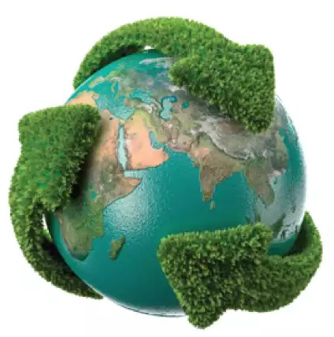

Desenvolvimento Sustentavel.
O desenvolvimento sustentável, vêm sendo um assunto muito discutido nas últimas décadas, devido a o descarte de lixos tóxicos nos meio ambiente e acarretando com o aquecimento global e as consequência que ele trás como enchentes nas cidades grandes , altas temperatura, descongelamento das geleiras etc. Muitos países já estão lutando contra o aquecimento global, com o desenvolvimento sustentável usando estratégias como o Pfand com alta taxa de reciclagem de produtos de vidro , alumínio e plástico que prejudicam muito o meio ambiente
